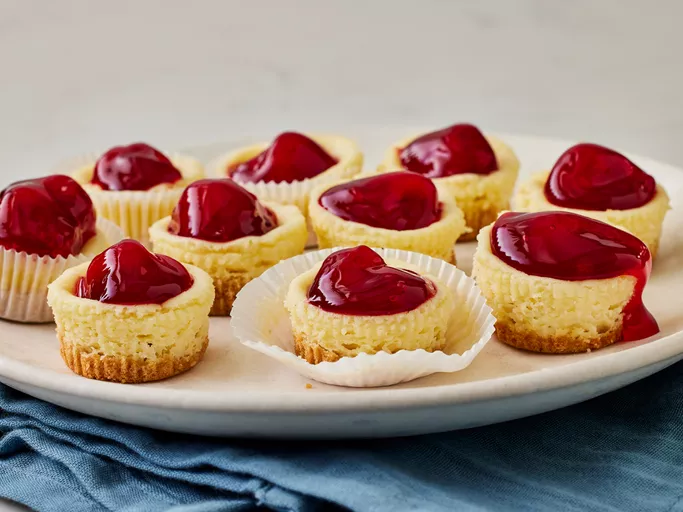

Mini Cheese Cakes

Description
Fluffy creamy delicious little clouds. I like to top them with cherry pie filling, but they also taste great with any berries.
- 1 12 ounce package of vanilla wafers
- 2 8 ounce packages of cream cheese
- 3/4 cup white sugar
- 2 large eggs
- 1 teaspoon of vanilla extract
- 1 21 ounce can cherry pie filling
Directions
- Gather all the ingredients
- Preheat oven to 350 degrees F 175 degrees C. Line two 24 cup miniature muffin tins with paper liners
- Crush wafers, Press 1/2 teaspoon into each paper cup
- Beat cream cheese,sugar,eggs, and vanilla in a mixing bowl until light and fluffy. Fill each muffin liner 3/4 full with mixture.
- Bake in the preheated oven for 15 mins until the cheese cake is set. Top with teaspoon of cherry pie filling
- Serve and enjoy!
Home